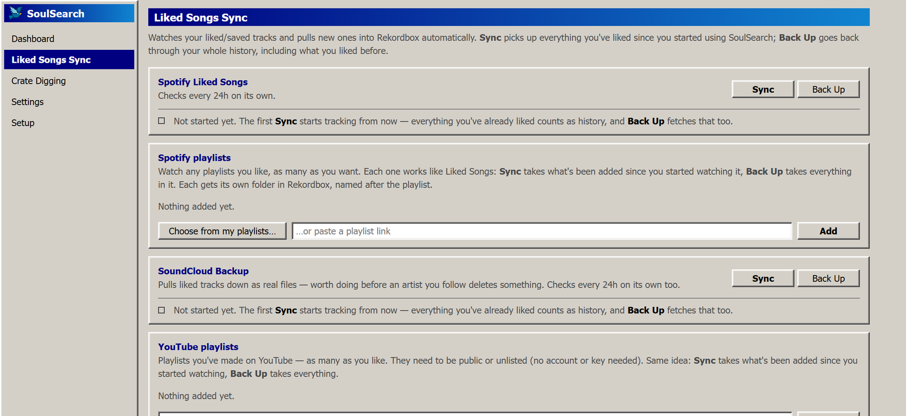

SoulSearch
SoulSearchYour likes,
in Rekordbox.
Like a track anywhere. SoulSearch finds it, downloads it, tags it and files it into a Rekordbox playlist — all on your own computer, with your own accounts.
Free. Intel Macs aren't supported yet.

Three steps, then it runs itself.
Set it up once. After that it checks on its own while it's open, and catches up if your computer was off.
Crate digging, built in.
Name a DJ — or one particular set — and SoulSearch finds the tracklists, then fetches what it found. Bring your own Claude, or copy the research brief into any free AI and paste the answer back.
Whole catalogues
Live sets, radio shows, edits and B2Bs, researched from the sources that publish real tracklists.
One set, exactly
Paste a link or name a set, and it zeroes in on just that tracklist.
Nothing lost to a bad connection
If your internet drops, it pauses and carries on instead of writing tracks off as missing.
Private by design
It makes its own Soulseek login, and keeps your passwords in your computer's own secure store.
Opening it the first time.
SoulSearch is a small independent app, so your computer will say it doesn't recognise it. That's expected — here's the way past.
On Windows
- Double-click SoulSearch.exe.
- If a “Windows protected your PC” box appears, click More info, then Run anyway.
- Follow the Setup page. It takes a few minutes the first time.
On Mac
- Open the downloaded zip and drag SoulSearch into your Applications folder.
- Right-click it, choose Open, then Open again. Double-clicking won't work the first time.
- If it still refuses: System Settings → Privacy & Security → scroll down → Open Anyway.
You'll want Rekordbox installed. Downloads can be big — if you're on a phone hotspot or a data cap, keep an eye on it.